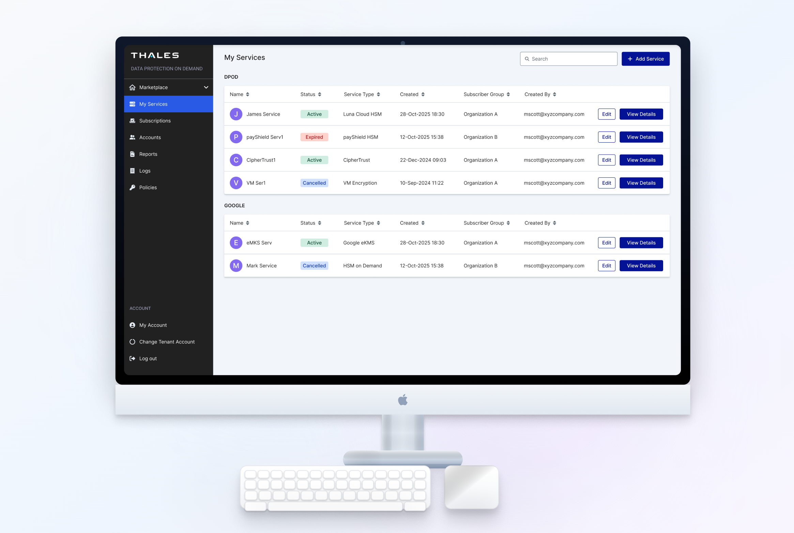

DPoD Platform Redesign
A platform redesign to support scalable, secure, and consistent management of complex enterprise digital security services

Team
Yushi Gong, James Hale
Tools
Figma, Claude Code, Lovable
Tags
Product Design, Design System, UI/UX
Timeline
Full Time - 6 months
INTRODUCTION
Project Overview
Data Protection on Demand (DPoD) is a cloud-based security platform by Thales that provides Cloud HSM and key management services. It enables organizations to deploy and manage cryptographic services on demand through an online marketplace. Within the Thales security ecosystem, Imperva is another major product focused on protecting applications and data, and it features a more mature and modern design system.
As Thales continues expanding its security platform, creating a consistent experience across products became a key priority. This project focused on redesigning the DPoD interface using the Imperva design system to align visual language, improve usability, and support more scalable product development.
HOW IT BEGINS
Problem Statement
Although DPoD and Imperva are part of the same security ecosystem, they were developed independently, leading to inconsistencies across products. Visual styles and UI patterns varied, many components were custom-built instead of shared, and some product needs were not fully supported by the Imperva design system. As a result, the fragmented experience made it difficult to maintain consistency and scale design and development across the platform.

Design Challenge
How might we redesign the DPoD interface using the Imperva design system while supporting unique workflows and extending missing components?
Design Strategy
To align DPoD with the Imperva design system, I followed a four-step approach:
- UI Audit: Review the existing DPoD interface and document the UI patterns used across the product.
- Design System Gap Analysis: Compare DPoD UI patterns with the Imperva component library to identify inconsistencies and missing components.
- Component Contribution: Design and contribute new components and variants to support DPoD workflows.
- Product Redesign: Apply the enhanced design system to redesign DPoD interface, creating a more cohesive experience.

UI Audit
Before aligning DPoD with the Imperva design system, I conducted a UI audit across key product workflows. DPoD already had an internal UI kit established by our team, defining the core visual foundations and components, but these components were applied inconsistently across the product. This audit helped:
- Document existing UI patterns across key pages and workflows
- Understand how the internal UI kit was used in real product scenarios
- Establish a baseline for comparing DPoD with the Imperva design system

SYSTEM DESIGN
Design System Gap Analysis
After documenting existing UI patterns, I mapped them against the Imperva design system to identify key gaps:
- Typography mismatch (Roboto vs. Inter)
- Navigation difference (top vs. side navigation)
- Inconsistent use of custom components
- Limited component flexibility for key workflows
- Missing empty state patterns for tables and lists
These gaps highlighted the need to evolve the design system to better support DPoD while ensuring consistency across products.

Contribute to Design System
ased on the gap analysis, several interface patterns in DPoD were not supported by the Imperva design system. To address these gaps, I designed and contributed new reusable components and variants aligned with Imperva’s visual language and product requirements. Each component was defined with clear structure, interaction states, and implementation guidelines.
These contributions expanded the Imperva component library, enabling the design system to better support complex enterprise product workflows.

IDEATION & REDESIGN
Before vs. After
With the updated design system, I redesigned the DPoD interface using standardized Imperva components. Custom UI elements were replaced, establishing a consistent visual language across products while preserving existing workflows. Key pages updated:
- Service Marketplace
- My Services
- Service Details
- Add Service
All pages now use standardized components instead of custom patterns, improving design consistency and simplifying the design-to-development process by enabling engineers to reuse shared elements.

Final Interface
The final design reflects a unified visual language aligned with the Imperva design system while maintaining the functionality and workflows of the original DPoD product. Key product interfaces were rebuilt using standardized components, ensuring a more cohesive and predictable user experience.
The redesigned interface improves component consistency, simplifies interaction patterns, and strengthens visual hierarchy across the product. By leveraging reusable system components, the design also establishes a more scalable UI foundation that supports future feature expansion and more efficient design-to-development collaboration.
Reflection
This project aligned the DPoD interface with the Imperva design system, helping create a more consistent visual language across the Thales security ecosystem.
By replacing custom UI patterns with standardized components, the redesign improved design scalability and simplified collaboration between design and engineering teams. It also expanded the Imperva design system by introducing new components and variants required to support DPoD’s workflows.
One key challenge in this project was balancing product-specific requirements with system-level consistency. While the goal was to adopt the Imperva design system, some DPoD workflows required additional flexibility. Identifying these gaps and contributing reusable components allowed the system to evolve while still supporting the needs of the product.
Through this project, I gained deeper experience working with enterprise design systems and cross-product alignment, and learned how design systems can enable more scalable and consistent product development across a platform.
Metrics 👀
Currently looking into the data of this new designs. Please come back to this case study at a later date to view!
Thanks for Reading ❤️
If you’d like to hear more about my experience, feel free to send me an email–I’d love to chat ☕.
My Other Projects
If you'd like to see more, check out my other projects below!